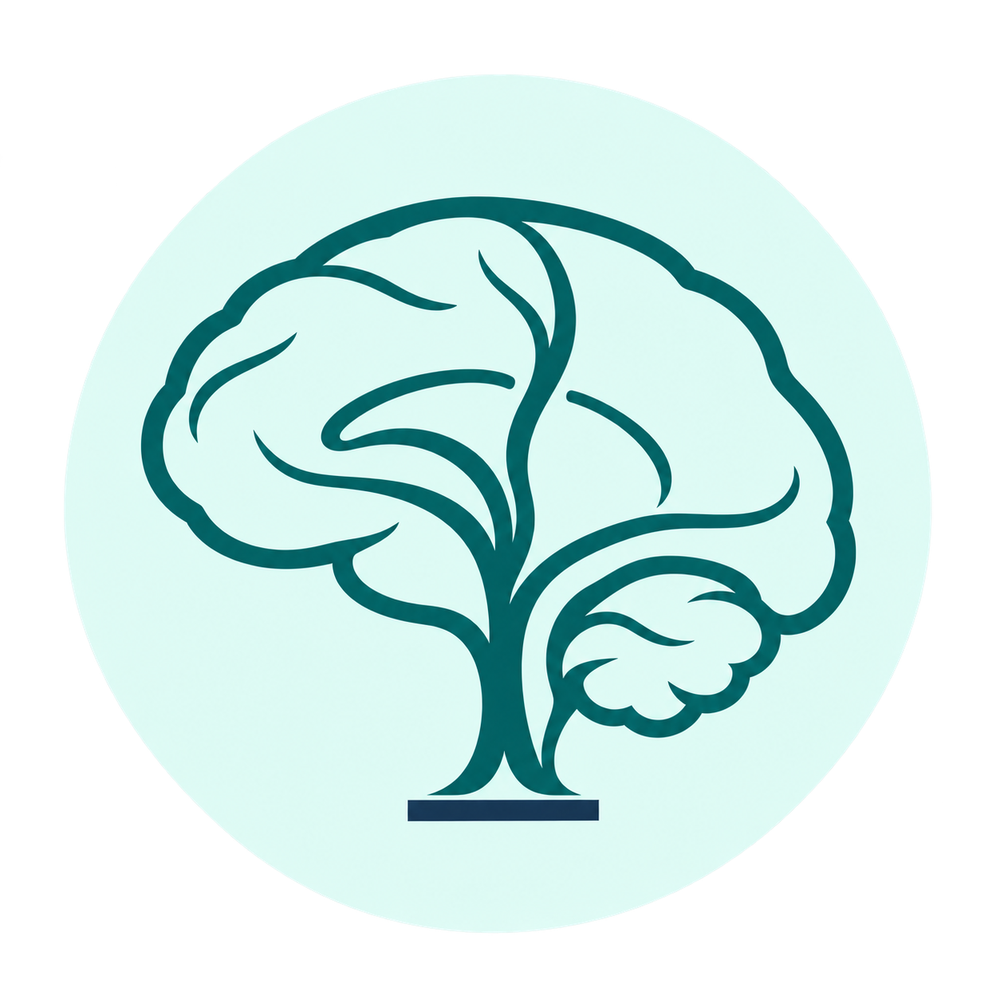

Escucha con atención.Cuando escuches la campana, toca el botón.
Toca una tarjeta para escucharla. Ajusta el volumen a un nivel cómodo.
El terapeuta elige el objetivo. Los demás sonidos serán distractores.
8 sonidos de práctica antes de empezar.
Con los demás sonidos,solo escucha.
No necesitas contar.Responde a cada campana.
Toca el botón o presiona espacio
Ahora los sonidos se mezclarán.El botón se verá igual todo el tiempo: guíate por lo que escuches.
Estira los brazos, mueve los hombrosy descansa los oídos.
Pausa sugerida. Puedes continuar cuando esté listo.
Terminaste de escuchar. Revisemos lo que pasó.
Se comparan proporciones: cada mitad puede tener distinta cantidad de sonidos objetivo.
El registro permanece solo mientras esta página esté abierta. No se solicitan nombres ni se envían resultados.
Cuando esté listo, puedes continuar.
El terapeuta elige el sonido objetivo. El niño responde a ese sonido y escucha los demás sin pulsar. La identidad del sonido no se muestra durante los bloques.
Comprueba que distingue los seis sonidos y que entiende la regla. Usa un volumen cómodo. Puedes empezar con un bloque de un minuto y ajustar según su desempeño.
La práctica ofrece retroalimentación. Los bloques no muestran aciertos en el momento, para no añadir pistas visuales ni interrumpir la escucha. El orden es aleatorio; cada bloque tiene aproximadamente 25% de sonidos objetivo. El objetivo permanece igual durante la sesión.
Observa omisiones, falsas respuestas, cambios entre mitades y apoyos. Es una actividad de práctica, no una prueba diagnóstica ni un protocolo validado. No se asume transferencia automática a la escuela.
Adaptación de tareas de detección continua. Referencias: Bubnik et al., 2015; Trinczer y Shalev, 2024; NICE NG87.
Los seis sonidos proceden de grabaciones de Freesound con licencia CC0. Se recortaron y ajustaron los niveles de los cinco sonidos nuevos para esta actividad. El archivo del ladrido se conserva sin cambios.
Los audios están incluidos en la aplicación. No se abren videos ni anuncios durante el juego.